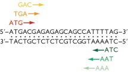

1.5 Locating genes and its functions: techniques, problems and difficulties
1 Problems and difficulties
1.1 Open Reading Frames
In the last lessons we learned about open reading frames, and how to find them using starting and ending codons.
In this lecture, you will learn about how these techniques turn out to be difficult to apply in many cases.
1.2 Open Reading Frames
The ORF begins with an initiation codon - usually (but not always) ATG - and ends with a termination codon: TAA, TAG or TGA.
Other initiation codons are possible. Some of these include, TTG, GTG, CTG, etc. All of them will put a methionine in the sequence.
1.3 Six Reading Frames
DNA sequence has six reading frames, three in one direction (what we did during the lecture) and three in the reverse direction on the complementary strand.

1.4 Statistics
If the DNA has a random sequence and a GC content of 50% then each of the three termination codons - TAA, TAG and TGA - will appear, on average, once every 64 base pairs.
If the GC content is > 50% then the termination codons, being AT-rich, will occur less frequently but one will still be expected every 100–200 bp. This means that random DNA should not show many ORFs longer than 50 codons in length.
1.5 Gene size
Most genes, on the other hand, are longer than 50 codons: the average lengths are 317 codons for Escherichia coli, 483 codons for Saccharomyces cerevisiae, and approximately 450 codons for humans.
ORF scanning, in its simplest form, therefore takes a figure of, say, 100 codons as the shortest length of a putative gene and records positive hits for all ORFs longer than this.
1.6 Where it works well
With bacterial genomes, simple ORF scanning is an effective way of locating most of the genes in a DNA sequence.
This picture shows a segment of the E. coli genome with all ORFs longer than 50 codons highlighted. The real genes in the sequence cannot be mistaken because they are much longer than 50 codons in length.
1.7 Bacterial genome
There is relatively little non-coding DNA in the genome of bacteria (only 11% for E. coli).
For bacteria is reasonable to assume that real genes do not overlap, and that there are no genes-within-genes.
Then it is only in the non-coding region where one can mistake a short spurious ORF for a real gene.
1.8 Higher eukaryotes
ORF scans are less effective for locating genes in DNA sequences from higher eukaryotes.
In part because there is more space between the real genes in a eukaryotic genome (62% of the human genome is intergenic), increasing the chances of finding spurious ORFs
1.9 Introns
In higher eukaryotes, genes are often split by introns, and so do not appear as continuous ORFs in the DNA sequence.
Many exons (parts which are not introns) are shorter than 100 codons, some fewer than 50 codons. In other words, the genes of a higher eukaryote do not appear in the genome sequence as long ORFs, and simple ORF scanning cannot locate them.
1.10 Homology Search
Identification of spurious ORFs as real genes is still a major problem, even for better algorithms.
In homology analysis the DNA databases are searched to determine if the test sequence is identical or similar to any genes that have already been sequenced.
This can show that the found sequences are homologous, meaning that they represent genes that are evolutionarily related.
2 Experimental techniques
2.1 RNA detection
Most experimental methods for gene location are not based on direct examination of DNA molecules, relying on detection of the RNA molecules that are transcribed from genes.
Techniques that map the positions of transcribed sequences in a DNA fragment can therefore be used to locate exons and entire genes.
2.2 RNA detection
The transcript is usually longer than the coding part of the gene because it begins several tens of nucleotides upstream of the initiation codon and continues several tens or hundreds of nucleotides downstream of the termination.
This does not therefore give a precise definition of the start and end of the coding region of a gene, but it does tell you that a gene is present in a particular region and it can locate the exon-intron boundaries.
2.3 Hybridization
The simplest procedures for studying transcribed sequences are based on hybridization analysis.
The principle of hybridization analysis is that a single-stranded DNA or RNA molecule of defined sequence (the probe) can base-pair to a second DNA or RNA molecule that contains a complementary sequence (the target).

3 Gene function
3.1 Identifying gene function
Once a new gene has been located in a genome sequence, the question of its function has to be addressed.
Completed sequencing projects have revealed that we know less than we thought about the content of individual genomes.
Of the 4288 protein-coding genes in the E. coli genome sequence, only 1853 (43% of the total) had been previously identified. For S. cerevisiae the figure was only 30%.
3.2 Homology
The basis of homology searching is that related genes have similar sequences and so a new gene can be discovered by virtue of its similarity to an equivalent, already sequenced, gene from a different organism.
A pair of homologous genes do not have identical nucleotide sequences, because the two genes undergo different random changes by mutation. But they are similar because these random changes have operated on the same starting sequence, the common ancestral gene.
3.3 Homology and evolution
Homologous genes are ones that share a common evolutionary ancestor, revealed by sequence similarities between the genes. Homologous genes fall into two categories:
Orthologous genes are those homologs that are present in different organisms and whose common ancestor predates the split between the species.
Paralogous genes are present in the same organism, often members of a recognized multigene family, their common ancestor possibly or possibly not predating the species in which the genes are now found.
3.4 Homology and aminoacid sequences
A tentative gene sequence is converted into an amino acid sequence before the search is carried out. A homology search is therefore less likely to give spurious results if the amino sequence is used.
3.5 Yeast genome example
- 30% of genes identified before sequencing
- 30% more using homology, with known function
- 10% more using homology, with no known function
- 30% with no homologs, called orphan genes
4 Inactivation
4.1 Experimental methods
The problem is that the objective - to plot a course from gene to function - is the reverse of the route normally taken by genetic analysis, in which the starting point is a phenotype and the objective is to identify the underlying gene or genes.
The problem we are currently addressing takes us in the opposite direction: starting with a new gene and hopefully leading to identification of the associated phenotype.
4.2 Mutants
In conventional genetic analysis, the genetic basis of a phenotype is usually studied by searching for mutant organisms in which the phenotype has become altered.
The gene or genes that have been altered in the mutant organism are then studied by genetic crosses.
4.3 Gene inactivation
If the starting point is the gene, rather than the phenotype, then the equivalent strategy would be to mutate the gene and identify the phenotypic change that results.
The easiest way to inactivate a specific gene is to disrupt it with an unrelated segment of DNA.
Examples where this analysis were carried out were the yeast and the mice.
4.4 Gene overexpression
The complementary approach is to engineer an organism in which the test gene is much more active than normal (‘gain of function’) and to determine what changes, if any, this has on the phenotype.
To overexpress a gene a special type of cloning vector must be used, one designed to ensure that the cloned gene directs the synthesis of as much protein as possible.
4.5 Reporter genes
If gene expression is restricted to a particular organ or tissue of a multicellular organism, or to a single set of cells within an organ or tissue, then this positional information can be used to infer the general role of the gene product.
Determining the pattern of gene expression within an organism is possible with a reporter gene. This is a gene whose expression can be monitored in a convenient way, ideally by visual examination.
This type of analysis has proved particularly useful in understanding the activities of genes involved in the earliest stages of development in Drosophila